Feature extraction¶
As described in the OTB Software Guide, the term Feature Extraction refers to techniques aiming at extracting added value information from images. These extracted items named features can be local statistical moments, edges, radiometric indices, morphological and textural properties. For example, such features can be used as input data for other image processing methods like Segmentation and Classification .
Local statistics extraction¶
This application computes the 4 local statistical moments on every pixel in the selected channel of the input image, over a specified neighborhood. The output image is multi band with one statistical moment (feature) per band. Thus, the 4 output features are the Mean, the Variance, the Skewness and the Kurtosis. They are provided in this exact order in the output image.
The LocalStatisticExtraction application has the following input parameters:
--in the input image to compute the features on
- -
-channelthe selected channel index in the input image to be - processed (default value is 1)
- -
-radiusthe computational window radius (default value is 3 - pixels)
--out the output image containing the local statistical moments
The application can be used like this:
otbcli_LocalStatisticExtraction -in InputImage
-channel 1
-radius 3
-out OutputImage
Edge extraction¶
This application Computes edge features on every pixel in the selected channel of the input image.
The EdgeExtraction application has the following input parameters:
--in the input image to compute the features on
- -
-channelthe selected channel index in the input image to be - processed (default value is 1)
-filterthe choice of edge detection method (gradient/sobel/touzi) (default value is gradient)
-
(-filter.touzi.xradius)the X Radius of the Touzi processing neighborhood (only if filter==touzi) (default value is 1 pixel) __
(-filter.touzi.yradius)the Y Radius of the Touzi processing neighborhood (only if filter==touzi) (default value is 1 pixel)
--out the output mono band image containing the edge features
The application can be used like this:
otbcli_EdgeExtraction -in InputImage
-channel 1
-filter sobel
-out OutputImage
or like this if filter==touzi:
otbcli_EdgeExtraction -in InputImage
-channel 1
-filter touzi
-filter.touzi.xradius 2
-filter.touzi.yradius 2
-out OutputImage
Radiometric indices extraction¶
This application computes radiometric indices using the channels of the input image. The output is a multi band image into which each channel is one of the selected indices.
The RadiometricIndices application has the following input parameters:
--in the input image to compute the features on
--out the output image containing the radiometric indices
- -
-channels.bluethe Blue channel index in the input image (default - value is 1)
- -
-channels.greenthe Green channel index in the input image - (default value is 1)
- -
-channels.redthe Red channel index in the input image (default - value is 1)
- -
-channels.nirthe Near Infrared channel index in the input image - (default value is 1)
- -
-channels.mirthe Mid-Infrared channel index in the input image - (default value is 1)
- -
-listthe list of available radiometric indices (default value is - Vegetation:NDVI)
The available radiometric indices to be listed into -list with their relevant channels in brackets are:
Vegetation:NDVI - Normalized difference vegetation index (Red, NIR)
Vegetation:TNDVI - Transformed normalized difference vegetation index (Red, NIR)
Vegetation:RVI - Ratio vegetation index (Red, NIR)
Vegetation:SAVI - Soil adjusted vegetation index (Red, NIR)
Vegetation:TSAVI - Transformed soil adjusted vegetation index (Red, NIR)
Vegetation:MSAVI - Modified soil adjusted vegetation index (Red, NIR)
Vegetation:MSAVI2 - Modified soil adjusted vegetation index 2 (Red, NIR)
Vegetation:GEMI - Global environment monitoring index (Red, NIR)
Vegetation:IPVI - Infrared percentage vegetation index (Red, NIR)
Water:NDWI - Normalized difference water index (Gao 1996) (NIR, MIR)
Water:NDWI2 - Normalized difference water index (Mc Feeters 1996) (Green, NIR)
Water:MNDWI - Modified normalized difference water index (Xu 2006) (Green, MIR)
Water:NDPI - Normalized difference pond index (Lacaux et al.) (MIR, Green)
Water:NDTI - Normalized difference turbidity index (Lacaux et al.) (Red, Green)
Soil:RI - Redness index (Red, Green)
Soil:CI - Color index (Red, Green)
Soil:BI - Brightness index (Red, Green)
Soil:BI2 - Brightness index 2 (NIR, Red, Green)
The application can be used as follows, which would produce an output image containing 3 bands, respectively with the Vegetation:NDVI, Vegetation:RVI and Vegetation:IPVI radiometric indices in this exact order:
otbcli_RadiometricIndices -in InputImage
-out OutputImage
-channels.red 3
-channels.green 2
-channels.nir 4
-list Vegetation:NDVI Vegetation:RVI
Vegetation:IPVI
or as follows, which would produce a single band output image with the Water:NDWI2 radiometric index:
otbcli_RadiometricIndices -in InputImage
-out OutputImage
-channels.red 3
-channels.green 2
-channels.nir 4
-list Water:NDWI2
Morphological features extraction¶
Morphological features can be highlighted by using image filters based on mathematical morphology either on binary or gray scale images.
Binary morphological operations¶
This application performs binary morphological operations (dilation, erosion, opening and closing) on a mono band image with a specific structuring element (a ball or a cross) having one radius along X and another one along Y. NB: the cross shaped structuring element has a fixed radius equal to 1 pixel in both X and Y directions.
The BinaryMorphologicalOperation application has the following input parameters:
--in the input image to be filtered
- -
-channelthe selected channel index in the input image to be - processed (default value is 1)
- -
-structypethe choice of the structuring element type - (ball/cross) (default value is ball)
- -
(-structype.ball.xradius)the ball structuring element X Radius - (only if structype==ball) (default value is 5 pixels)
- -
(-structype.ball.yradius)the ball structuring element Y Radius - (only if structype==ball) (default value is 5 pixels)
- -
-filterthe choice of the morphological operation - (dilate/erode/opening/closing) (default value is dilate)
- -
(-filter.dilate.foreval)the foreground value for the dilation - (idem for filter.erode/opening/closing) (default value is 1)
- -
(-filter.dilate.backval)the background value for the dilation - (idem for filter.erode/opening/closing) (default value is 0)
--out the output filtered image
The application can be used as follows:
otbcli_BinaryMorphologicalOperation -in InputImage
-channel 1
-structype ball
-structype.ball.xradius 10
-structype.ball.yradius 5
-filter opening
-filter.opening.foreval 1.0
-filter.opening.backval 0.0
-out OutputImage
Gray scale morphological operations¶
This application performs morphological operations (dilation, erosion, opening and closing) on a gray scale mono band image with a specific structuring element (a ball or a cross) having one radius along X and another one along Y. NB: the cross shaped structuring element has a fixed radius equal to 1 pixel in both X and Y directions.
The GrayScaleMorphologicalOperation application has the following input parameters:
--in the input image to be filtered
- -
-channelthe selected channel index in the input image to be - processed (default value is 1)
- -
-structypethe choice of the structuring element type - (ball/cross) (default value is ball)
- -
(-structype.ball.xradius)the ball structuring element X Radius - (only if structype==ball) (default value is 5 pixels)
- -
(-structype.ball.yradius)the ball structuring element Y Radius - (only if structype==ball) (default value is 5 pixels)
- -
-filterthe choice of the morphological operation - (dilate/erode/opening/closing) (default value is dilate)
--out the output filtered image
The application can be used as follows:
otbcli_GrayScaleMorphologicalOperation -in InputImage
-channel 1
-structype ball
-structype.ball.xradius 10
-structype.ball.yradius 5
-filter opening
-out OutputImage
Textural features extraction¶
Texture features can be extracted with the help of image filters based on texture analysis methods like Haralick and structural feature set (SFS).
Haralick texture features¶
This application computes Haralick, advanced and higher order texture features on every pixel in the selected channel of the input image. The output image is multi band with a feature per band.
The HaralickTextureExtraction application has the following input parameters:
--in the input image to compute the features on
- -
-channelthe selected channel index in the input image to be - processed (default value is 1)
- -
-texturethe texture set selection [simple/advanced/higher] - (default value is simple)
--parameters.min the input image minimum (default value is 0)
--parameters.max the input image maximum (default value is 255)
- -
-parameters.xradthe X Radius of the processing neighborhood - (default value is 2 pixels)
- -
-parameters.yradthe Y Radius of the processing neighborhood - (default value is 2 pixels)
- -
-parameters.xoffthe 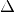X Offset for the - co-occurrence computation (default value is 1 pixel)
- -
-parameters.yoffthe Y Offset for the - co-occurrence computation (default value is 1 pixel)
- -
-parameters.nbbinthe number of bin per axis for histogram - generation (default value is 8)
- -
-outthe output multi band image containing the selected texture - features (one feature per band)
The available values for -texture with their relevant features are:
- -
-texture=simple:In this case, 8 local Haralick textures features will be processed. The 8 output image channels are: Energy, Entropy, Correlation, Inverse Difference Moment, Inertia, Cluster Shade, Cluster Prominence and Haralick Correlation. They are provided in this exact order in the output image. Thus, this application computes the following Haralick textures over a neighborhood with user defined radius. To improve the speed of computation, a variant of Grey Level Co-occurrence Matrix(GLCM) called Grey Level Co-occurrence Indexed List (GLCIL) is used. Given below is the mathematical explanation on the computation of each textures. Here 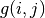 is the frequency of element in the GLCIL whose index is i, j. GLCIL stores a pair of frequency of two pixels taken from the given offset and the cell index (i, j) of the pixel in the neighborhood window. :(where each element in GLCIL is a pair of pixel index and it’s frequency, is the frequency value of the pair having index is i, j).
“Energy” 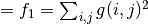
“Entropy” 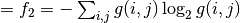, or 0 if 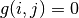
“Correlation” 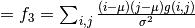
“Inverse Difference Moment” 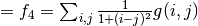
“Inertia” 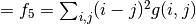 (sometimes called “contrast”)
“Cluster Shade” 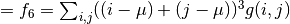
“Cluster Prominence” 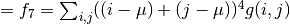
“Haralick’s Correlation” 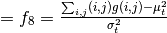 where 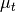 and 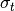 are the mean and standard deviation of the row (or column, due to symmetry) sums. Above, 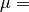 (weighted pixel average) 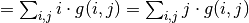 (due to matrix symmetry), and 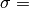 (weighted pixel variance) 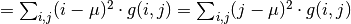 (due to matrix symmetry).
- -
-texture=advanced:In this case, 10 advanced texture features will be processed. The 10 output image channels are: Mean, Variance, Dissimilarity, Sum Average, Sum Variance, Sum Entropy, Difference of Entropies, Difference of Variances, IC1 and IC2. They are provided in this exact order in the output image. The textures are computed over a sliding window with user defined radius.
To improve the speed of computation, a variant of Grey Level Co-occurrence Matrix(GLCM) called Grey Level Co-occurrence Indexed List (GLCIL) is used. Given below is the mathematical explanation on the computation of each textures. Here is the frequency of element in the GLCIL whose index is i, j. GLCIL stores a pair of frequency of two pixels taken from the given offset and the cell index (i, j) of the pixel in the neighborhood window. :(where each element in GLCIL is a pair of pixel index and it’s frequency, is the frequency value of the pair having index is i, j).
“Mean” 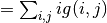
“Sum of squares: Variance” 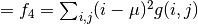
“Dissimilarity” 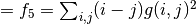
“Sum average” 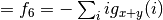
“Sum Variance” 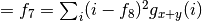
“Sum Entropy” 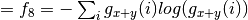
“Difference variance” 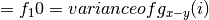
“Difference entropy” 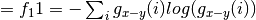
“Information Measures of Correlation IC1” 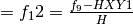
“Information Measures of Correlation IC2” 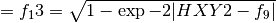
Above, (weighted pixel average) (due to matrix summetry), and
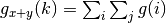 where 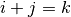 and 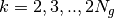 and
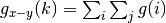 where 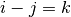 and 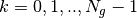
- -
-texture=higher:In this case, 11 local higher order statistics texture coefficients based on the grey level run-length matrix will be processed. The 11 output image channels are: Short Run Emphasis, Long Run Emphasis, Grey-Level Nonuniformity, Run Length Nonuniformity, Run Percentage, Low Grey-Level Run Emphasis, High Grey-Level Run Emphasis, Short Run Low Grey-Level Emphasis, Short Run High Grey-Level Emphasis, Long Run Low Grey-Level Emphasis and Long Run High Grey-Level Emphasis. They are provided in this exact order in the output image. Thus, this application computes the following Haralick textures over a sliding window with user defined radius: (where 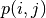 is the element in cell i, j of a normalized Run Length Matrix, 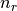 is the total number of runs and 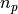 is the total number of pixels):
“Short Run Emphasis” 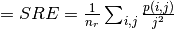
“Long Run Emphasis” 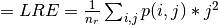
“Grey-Level Nonuniformity” 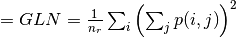
“Run Length Nonuniformity” 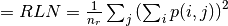
“Run Percentage” 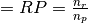
“Low Grey-Level Run Emphasis” 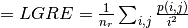
“High Grey-Level Run Emphasis” 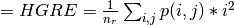
“Short Run Low Grey-Level Emphasis” 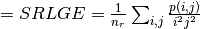
“Short Run High Grey-Level Emphasis” 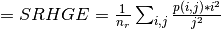
“Long Run Low Grey-Level Emphasis” 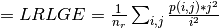
“Long Run High Grey-Level Emphasis” 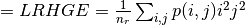
The application can be used like this:
otbcli_HaralickTextureExtraction -in InputImage
-channel 1
-texture simple
-parameters.min 0
-parameters.max 255
-out OutputImage
SFS texture extraction¶
This application computes Structural Feature Set textures on every pixel in the selected channel of the input image. The output image is multi band with a feature per band. The 6 output texture features are SFS’Length, SFS’Width, SFS’PSI, SFS’W-Mean, SFS’Ratio and SFS’SD. They are provided in this exact order in the output image.
It is based on line direction estimation and described in the following publication. Please refer to Xin Huang, Liangpei Zhang and Pingxiang Li publication, Classification and Extraction of Spatial Features in Urban Areas Using High-Resolution Multispectral Imagery. IEEE Geoscience and Remote Sensing Letters, vol. 4, n. 2, 2007, pp 260-264.
The texture is computed for each pixel using its neighborhood. User can set the spatial threshold that is the max line length, the spectral threshold that is the max difference authorized between a pixel of the line and the center pixel of the current neighborhood. The adjustement constant alpha and the ratio Maximum Consideration Number, which describes the shape contour around the central pixel, are used to compute the 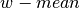 value.
The SFSTextureExtraction application has the following input parameters:
--in the input image to compute the features on
- -
-channelthe selected channel index in the input image to be - processed (default value is 1)
--parameters.spethre the spectral threshold (default value is 50)
- -
-parameters.spathrethe spatial threshold (default value is 100 - pixels)
--parameters.nbdir the number of directions (default value is 20)
--parameters.alpha the alpha value (default value is 1)
- -
-parameters.maxconsthe ratio Maximum Consideration Number - (default value is 5)
- -
-outthe output multi band image containing the selected texture - features (one feature per band)
The application can be used like this:
otbcli_SFSTextureExtraction -in InputImage
-channel 1
-out OutputImage